声纹信号处理：从 x(t) 到深度学习
把《变压器声纹故障诊断研究综述》的技术链路逐环节拆开——理论推导、手写复现、数值对拍、训练验证。
零第三方算法依赖 numpy + Pillow 6 类工况 49 维特征 BPNN / CNN 全手写
00总览与运行
整个项目只依赖 numpy 与 Pillow。FFT、小波、EMD、MFCC、反向传播、绘图引擎全部手写——目的是把"看理论算法并复现"做实，而不是调一堆库的黑盒。
cd acoustic-lab python run.py # 全流程：合成数据 → 图/表 → 训练 → metrics python run.py --n 20 # 快速复跑 python run.py --check # 只跑算法数值验证 python run.py --wav data/3_局部放电.wav # 换成真实录音做单文件分析
产物：index.html（本页）、outputs/*.png（全部图）、outputs/*.csv（波形/特征/指标表）、data/*.wav（6 个示例音频）。表里的数值来自 outputs/metrics.js，由 run.py 真实跑出来后写入，不是手写死的。
--wav 接入同一套分析链。01x(t)：声纹信号从哪来
变压器本体声主要来自铁芯磁致伸缩，频率是工频的 2 倍（2 f₀ = 100 Hz）及其谐波，再叠加绕组/油箱振动、冷却设备噪声与漏磁引起的 50 Hz 分量。把它写成一个可复现的模型：
x[n] = x(n·Ts)，Ts = 1/fs = 0.125 ms（fs = 8000 Hz）
A = [1.00, 0.42, 0.20, 0.10, 0.05]，φk ~ U(0, 2π)
采样定理要求 fs > 2 fmax；这里 8 kHz 覆盖到 4 kHz，足够放局部放电的高频脉冲（2.2–3.4 kHz）。真实工程常用 25.6 / 48 kHz（综述 6.1.4 指出采样协议不统一正是横向对比失效的原因之一）。
六类工况的扰动项
| 工况 | s_fault(t) | 物理含义 | 哪个域最容易看出来 |
|---|---|---|---|
| 正常 | 只有底噪 n(t) | 稳态磁致伸缩 | 频域：100 Hz 谐波族 |
| 铁芯松动 | 50 Hz 幅值调制 + 780 Hz 衰减敲击 | 夹紧力下降、间歇金属撞击 | 时域 / 包络 |
| 直流偏磁 | 150/250/350 Hz 奇次谐波 + tanh 削顶 | 励磁电流半波饱和 | 频域：奇次谐波比 |
| 局部放电 | 稀疏 2.2–3.4 kHz 衰减振荡脉冲 | 绝缘局部击穿 | 时频域 / 高频能量 |
| 短路冲击 | 宽带瞬态 + 17 Hz "沸腾"调制 | 电动力冲击、绕组变形 | 时频域 |
| 风机老化 | 12 Hz 转频调制的宽带气动噪声 | 轴承磨损、转速不稳 | 谱平坦度 / 噪声基底 |
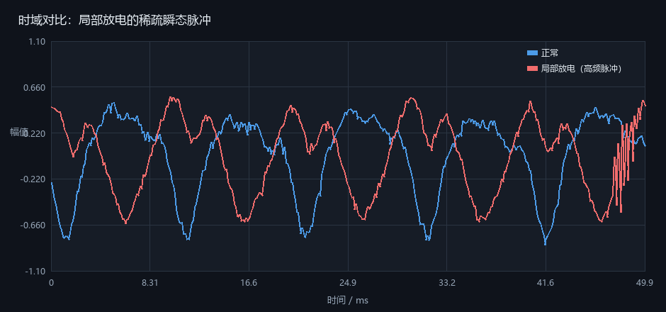
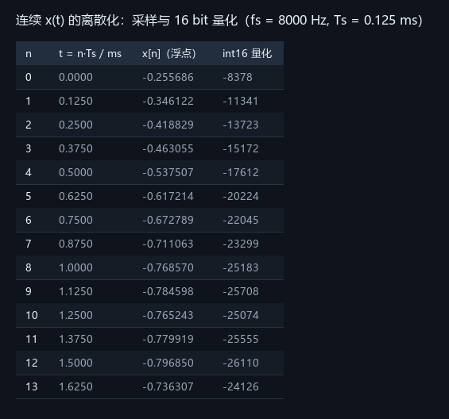
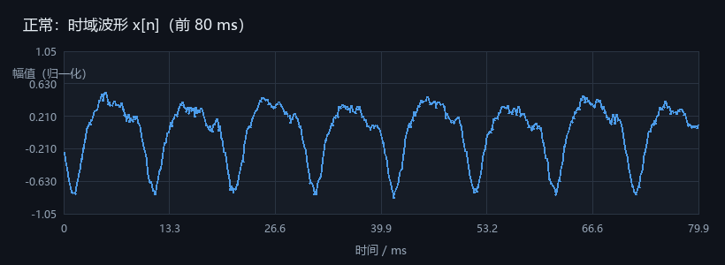
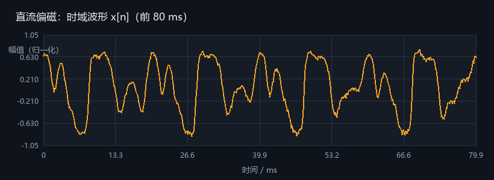
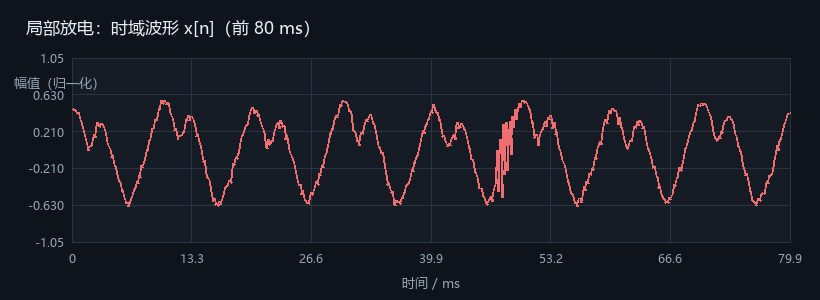
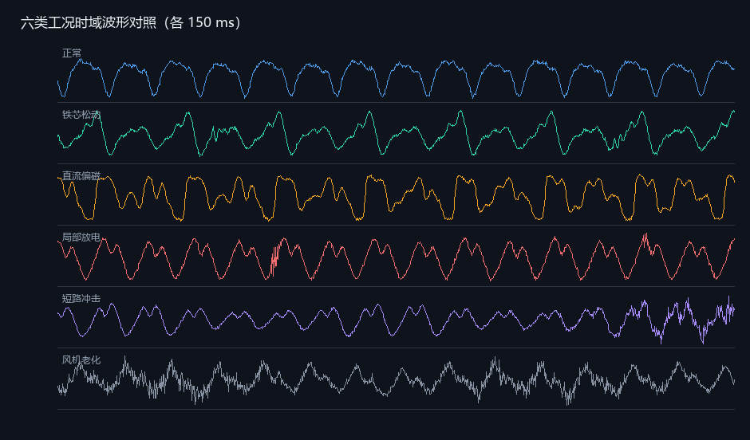
表格数据：outputs/waveform_data.csv（n, t_ms, x_n, int16）；每类一个 WAV 在 data/。
02傅里叶变换：DFT → FFT → STFT
DFT：把信号投影到复正弦基上
x[n] = (1/N) Σk=0N−1 X[k] · ej2πkn/N
频率分辨率 Δf = fs / N；|X[k]| 是第 k 根谱线（f = k·fs/N）的幅度
直接算 DFT 是 O(N²) 次复数乘法。dsp.dft() 就是按定义实现的矩阵版；dsp.fft() 用 Cooley–Tukey radix-2：按奇偶拆成两个 N/2 点 DFT，蝶形合并，复杂度降到 O(N log N)，并做了比特反转（bit-reversal）重排。本项目用 numpy 把同一层的所有蝶形一次算完，比 Python 循环快得多。
WNk = e−j2πk/N 称旋转因子
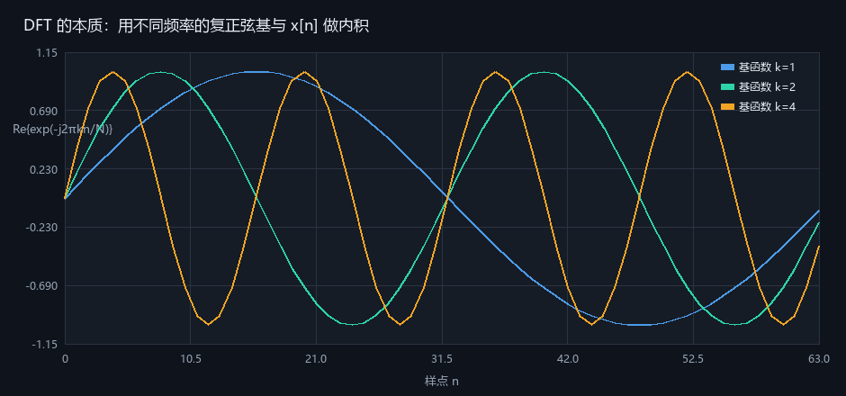
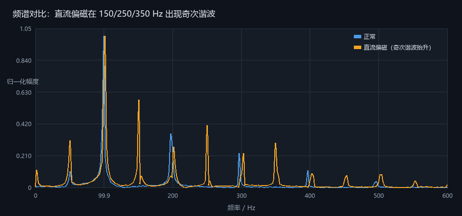
STFT：给非平稳信号加一扇窗
全局 FFT 丢掉了时间位置。STFT 把信号切成短帧（25 ms 帧长 / 10 ms 帧移 / 汉明窗），逐帧做 FFT：
汉明窗抑制频谱泄漏；帧移 H 决定时间轴密度。本复现得到 48 帧 × 257 个频点，再经 Mel 滤波压缩成 26 × 48 的时频谱图——这就是后面 CNN 的输入。
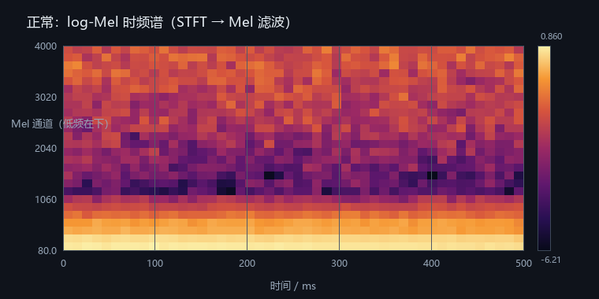
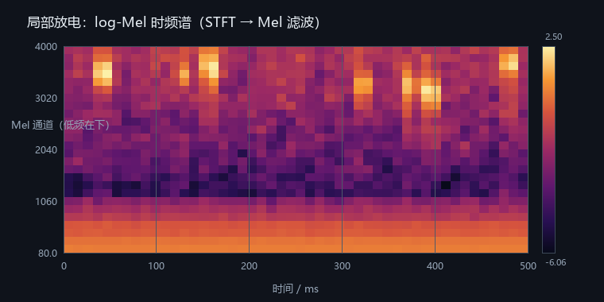
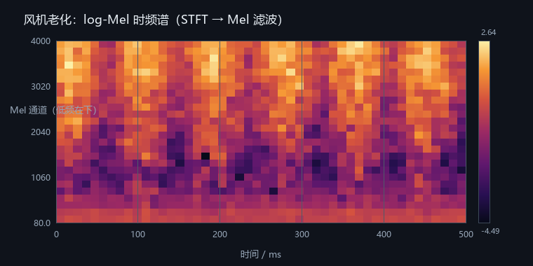
数值对拍：DFT / FFT / STFT 与 numpy.fft 的最大偏差见第 10 节验证总表。
03小波变换与 EMD：傅里叶之外的两条路
为什么不够用
STFT 的窗宽是固定的：对 100 Hz 稳态谐波合适，对局放微秒级脉冲就太钝。小波用可伸缩的基解决——高频用窄窗（时间分辨率高），低频用宽窗（频率分辨率高）。
复 Morlet：ψ(t) = π−1/4 ejω₀t e−t²/2， 中心频率 f ≈ ω₀/(2πa)（本项目 ω₀ = 6）
离散小波 DWT（Mallat 塔式）：cA = ↓2(x ⊛ h₀)，cD = ↓2(x ⊛ h₁)，逐层对 cA 再分解
本项目实现两套 DWT：Haar（最简单的正交小波，cA=(x₀+x₁)/√2、cD=(x₀−x₁)/√2）与 db4（Daubechies D8，4 阶消失矩，8 抽头正交镜像滤波器组 QMF）。重构不是随便拼回去，而是分析算子的转置：h₁[n] = (−1)ⁿ h₀[L−1−n]，x̂ = Aᵀ·[cA;cD]。这一步写错相位，重构误差会从 1e-12 变成 1.4 —— 项目里确实踩过并修掉了。
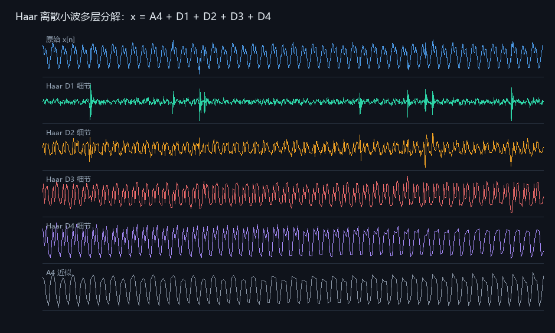
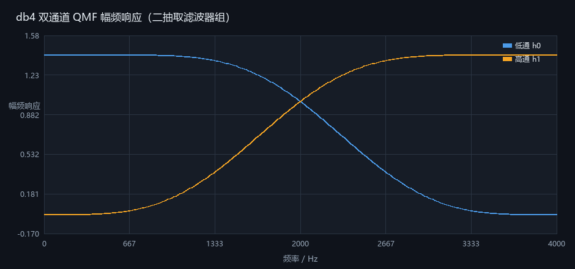
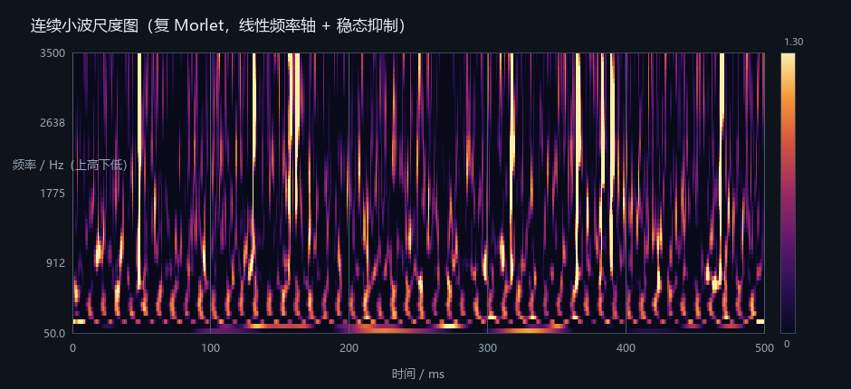
EMD：连基函数都不预设
小波仍要选母小波；EMD 直接由数据自己分解。筛分（sifting）步骤：
- 找出 h(t) 的全部局部极大/极小，用自然三次样条插值出上、下包络（本项目连 Thomas 解三对角方程都自己写）；
- 均值包络 m(t) = (上 + 下)/2，令 h ← h − m；
- 重复到标准差 SD = Σm²/Σh² < 0.05，得到一个 IMF；从残差里继续筛下一个。
合格的 IMF 要满足：极值点数与过零点数之差 ≤ 1，且上下包络均值为 0。IMF 按频率从高到低排列，天然适合"故障冲击集中在前几个 IMF"这类特征。缺点是端点效应与模态混叠。

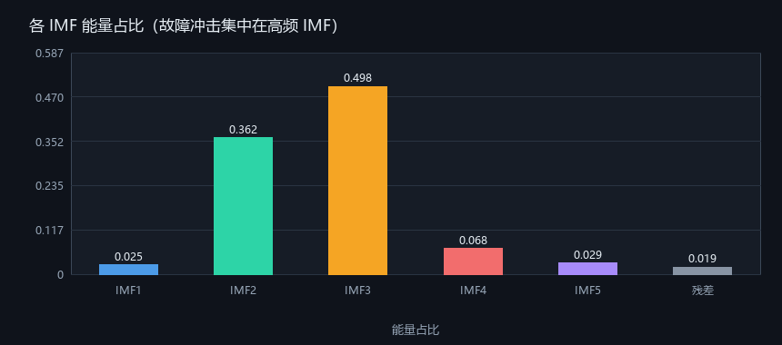
| 傅里叶 / STFT | 小波 DWT / CWT | EMD | |
|---|---|---|---|
| 基函数 | 固定复正弦 | 预设母小波，可伸缩 | 无基，数据自适应 |
| 适合 | 稳态周期谐波 | 瞬态脉冲、多分辨率 | 非平稳、非线性 |
| 成本 | O(N log N) | O(N) | 筛分迭代，最慢 |
| 本项目 | MFCC / 频谱特征 | 4 层能量熵、尺度图 | IMF 能量占比 + 样本熵 |
04"伽马变换"：两种完全不同的东西
(A) 幂律 Gamma 校正：s → s^γ
声纹谱图里 100 Hz 基频能量常常比局放脉冲高几个数量级，直接送 CNN 会被强谐波"掩蔽"。γ=0.3~0.6 的压缩能让弱故障分量可见，是"声纹 → 图谱 → CNN"链路里便宜但有效的一步。
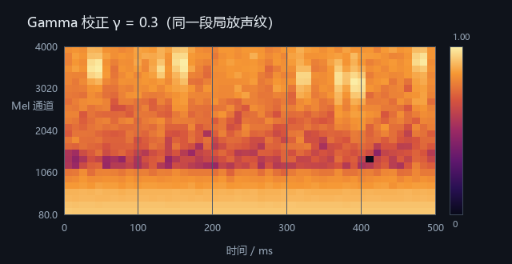
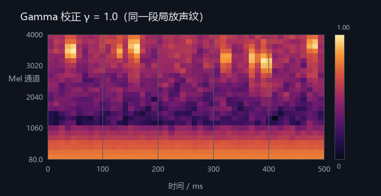
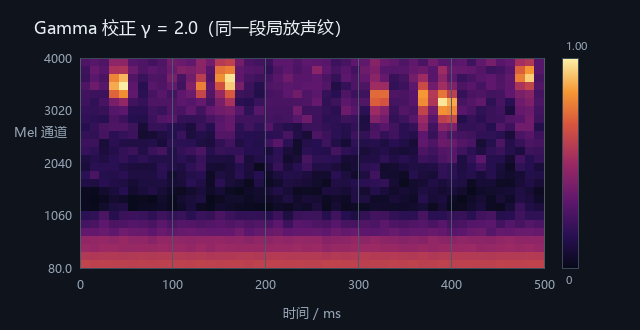
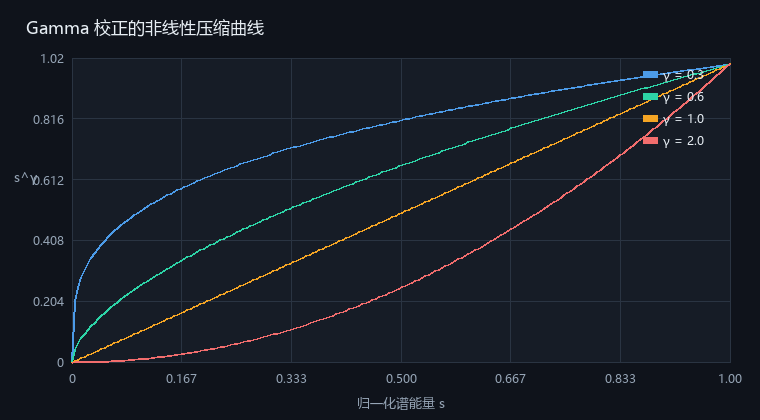
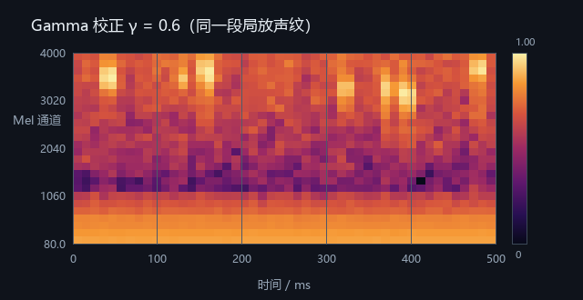
量化效果（P90−P10 对比度，数值由脚本实测）：—。可以看到 γ 从 2.0 降到 0.3 时弱能量区间被重新分配。
(B) Gammatone：模拟耳蜗的听觉滤波器
b = 24.7 · (4.37 fc/1000 + 1) 来自 ERB 带宽；中心频率按 ERB 数域等距排布
它是 MFCC 中 Mel 三角滤波器的"生理更真实"替代：Gamma 形脉冲响应 × 余弦载波，低频通道窄、高频通道宽。dsp.gammatonegram() 生成 26 通道时频表示，可与 log-Mel 谱图直接对照。
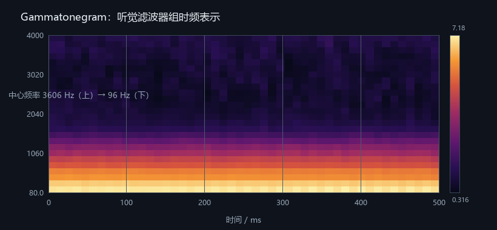
05Mel / MFCC / 39 维倒谱特征
MFCC 是综述里出现频率最高的特征（几乎每个模型都用它）。它的思路是模仿人耳：低频分辨细、高频分辨粗，再做倒谱解卷积。
2 分帧 25 ms / 帧移 10 ms → 汉明窗 w[n] = 0.54 − 0.46 cos(2πn/(N−1))
3 功率谱 P[k] = |FFT|² → 26 个 Mel 三角滤波器 → 对数能量 log(·)
4 Mel 转换：mel(f) = 2595 log₁₀(1 + f/700)
5 DCT-II 去相关，取前 13 维 → MFCC；再算 Δ、ΔΔ → 13 + 13 + 13 = 39 维
ck = √(2/M) Σm log Em cos(πk(2m+1)/(2M))
为什么有效：log 谱在倒谱域把"激励（谐波结构）"和"传递函数（声道/箱体共振）"分离，取低阶系数就得到紧凑的谱包络；Δ/ΔΔ 补上动态信息。综述里双向 LSTM 用的正是 39 维 MFCC 时序特征。

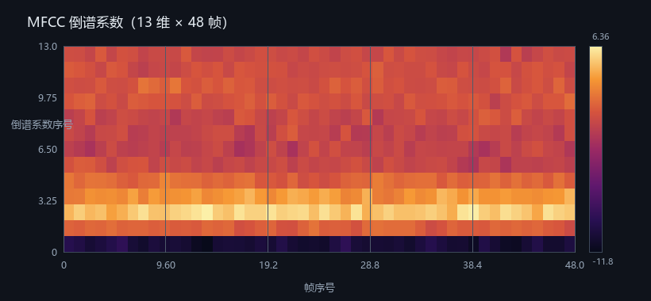
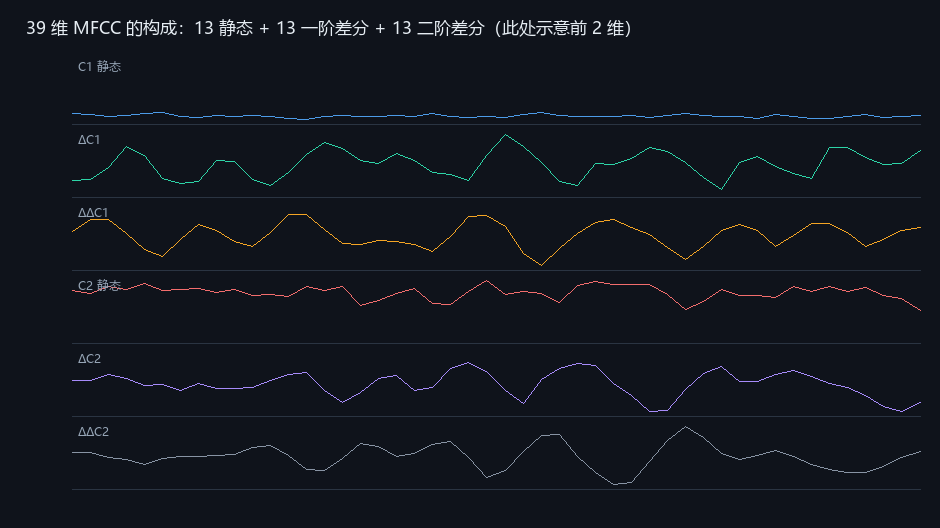
本项目：26 个 Mel 通道、13 维 MFCC、48 帧；输入 CNN 时把 log-Mel 谱图做 γ=0.4 校正后缩放到 32×32。
06特征提取与特征分析
从每条声纹抽取 49 维特征，对应综述的第 4 节"时域 / 频域 / 时频域"三分类：
| 域 | 维数 | 特征 | 主要捕获什么 |
|---|---|---|---|
| 时域 | 8 | RMS、短时能量标准差、峰值、峭度、偏度、过零率、波形因子、脉冲因子 | 冲击、削顶、幅值分布 |
| 频域 | 7 | 谱质心、谱带宽、谱平坦度、100 Hz 占比、奇次谐波比、高频能量比、谱峰频率 | 谐波结构、宽带噪声 |
| 倒谱 | 26 | 13 维 MFCC 的均值 + 标准差 | 谱包络与动态 |
| 时频域 | 8 | Haar 能量熵、db4 细节能量比、CWT 能量质心、IMF1–4 能量占比、IMF1 样本熵 | 非平稳瞬态、多尺度能量 |
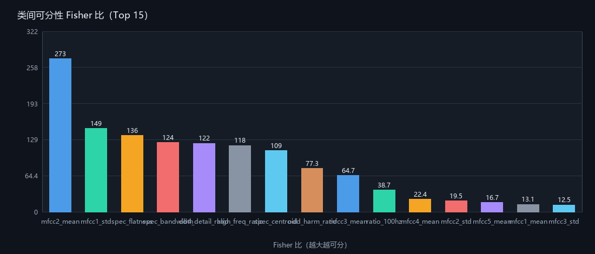
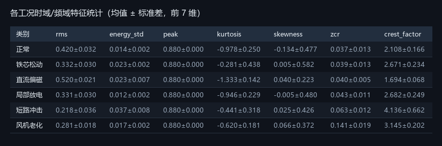
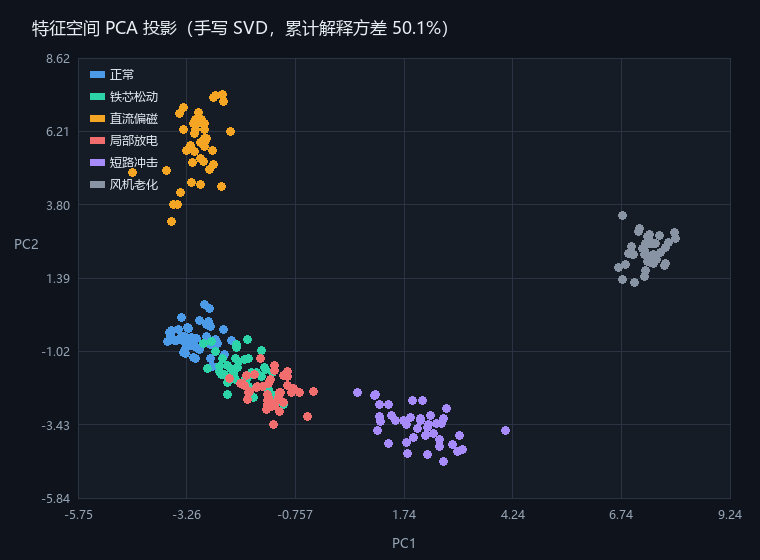
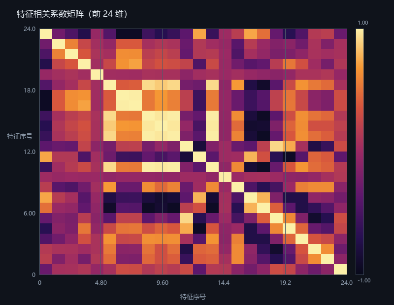
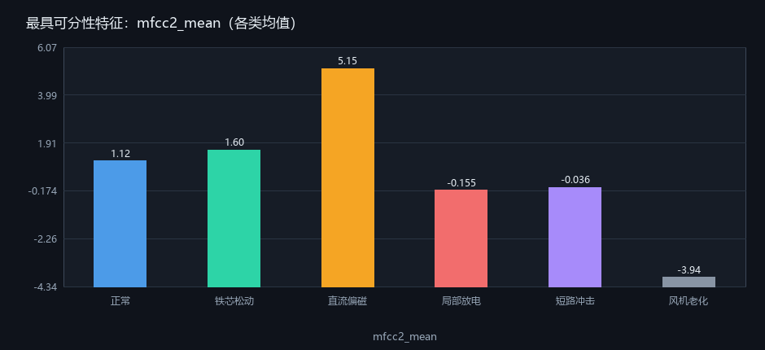
脚本实测的 Top 5 可分特征：—。PCA 前两维累计解释方差 —；特征间最大非对角相关系数 —（越接近 1 冗余越严重）。
peak 这一维在六类上几乎是常数、Fisher 比接近 0。真实录音有通道增益差异，它才有意义。这类"因为数据生成方式而失效的特征"在做特征选择时必须剔掉。07什么是神经网络：BPNN 与 CNN
BPNN：误差反向传播网络
本质上就是多层线性变换 + 非线性激活 + 链式法则。输入 49 维特征，隐层 48 个 tanh 单元，输出 6 类 softmax：
损失： L = −(1/N) Σi Σc Yic log pic（交叉熵）
反向： δ₂ = (p − Y)/N → ∂L/∂W₂ = a₁ᵀδ₂， ∂L/∂b₂ = Σδ₂
δ₁ = δ₂W₂ᵀ ⊙ (1 − a₁²) → ∂L/∂W₁ = Xᵀδ₁， ∂L/∂b₁ = Σδ₁
交叉熵 + softmax 的梯度恰好是 p − Y，这也是为什么用它们搭配（比 MSE + sigmoid 收敛快得多）。参数用 Adam 更新：一阶动量 + 二阶自适应步长。
CNN：把谱图当图像看
全连接层把 32×32 谱图拉平会丢掉局部结构，且参数爆炸。CNN 靠三件事解决：局部感受野（3×3 卷积核只邻域相连）、权值共享（同一个核扫完整张图）、池化（2×2 最大池化降维并获得平移不变性）。
→ 展平 4×16×16 = 1024 → 全连接 6 → softmax
卷积反向：∂L/∂W = δoutᵀ · cols， ∂L/∂X = col2im(δout · W)
池化反向：梯度只回传给前向时取到最大值的那个位置（记录 mask）
im2col 把滑窗卷积转成一次矩阵乘法，是几乎所有框架的底层做法；col2im 是它的转置，用于把梯度攒回原图位置。这两处最容易写错，因此项目做了数值梯度检查：给某个权重 ±1e-5 扰动，比较解析梯度与 (L₊−L₋)/(2ε)。
这里有个真实的坑：BPNN 的相对误差比 CNN 大几个数量级，但并不是反向传播写错——误差最大的那个权重解析梯度只有 −2.03e−06，绝对误差却仅 1.03e−11。中心差分在近零梯度处会被浮点噪声放大相对误差。判断实现是否正确要看绝对误差（本项目 < 1e−8，其余探针相对误差都在 1e−10 量级）。

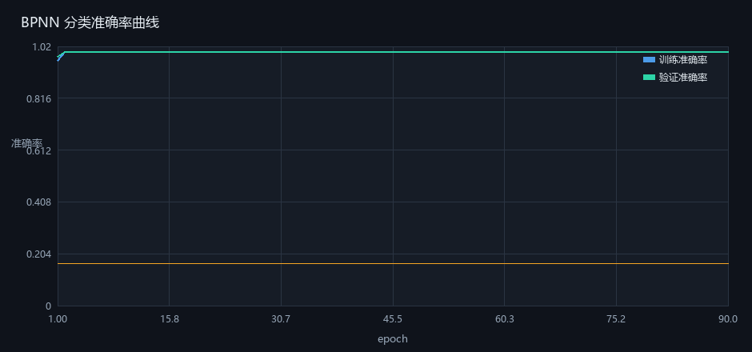
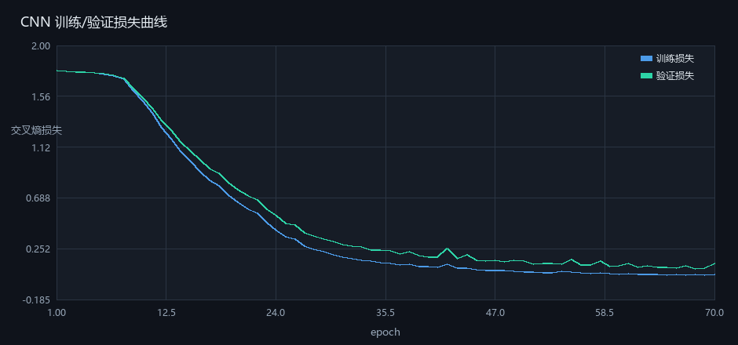

08分类曲线与结果
同一批数据、同一划分（分层 60/20/20，标准化只用训练集统计量，避免数据泄漏），两个手写模型对比。为避免 49 维特征下所有样本比例都刷到 100%、曲线变成一条直线，学习曲线特意只用 8 维时域特征训练：
| 模型 | 测试准确率 | 宏平均 F1 | 宏平均 AUC | 参数量 | 训练耗时 |
|---|
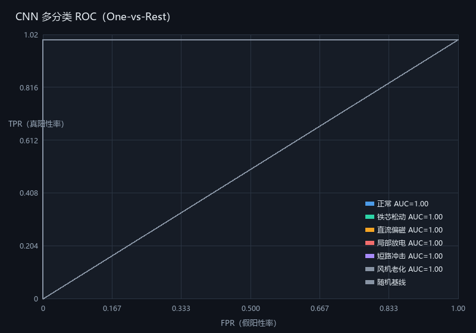
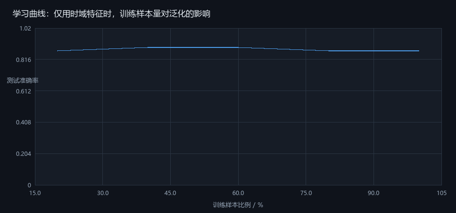
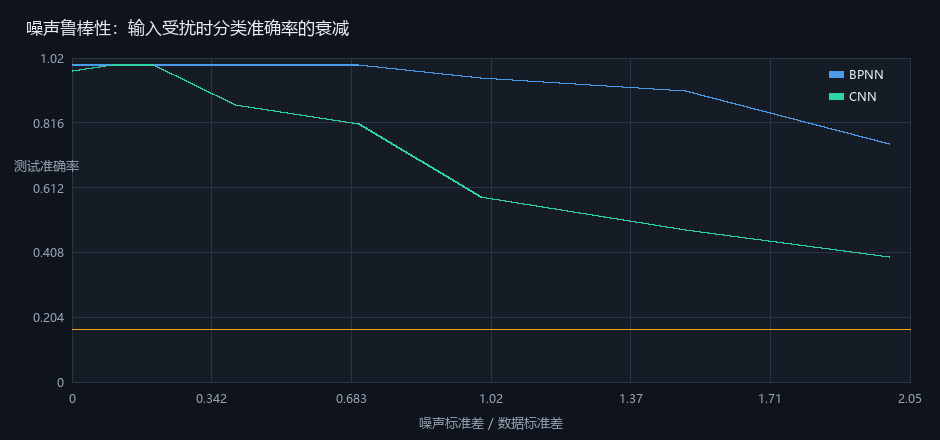
这条曲线比全 1.00 的 ROC 有用得多：它把综述第 6.1.1 节"噪声鲁棒性不足"变成可测的量。训练时没见过的噪声一上来，准确率就开始掉———。真实变电站的列车鸣笛、鸟声、风机宽带噪声都是这类分布外扰动。
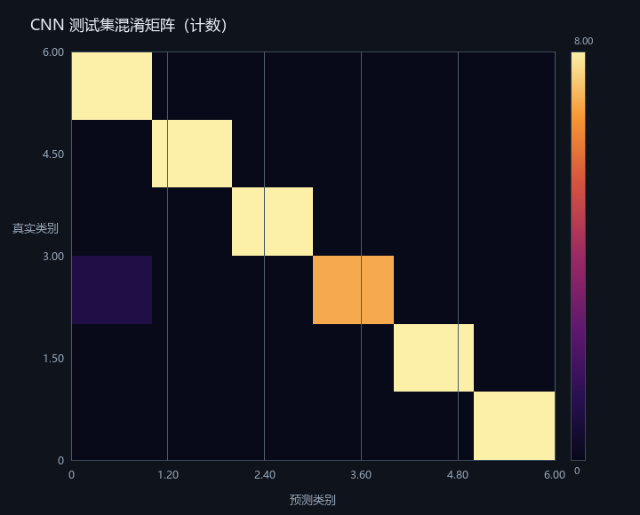
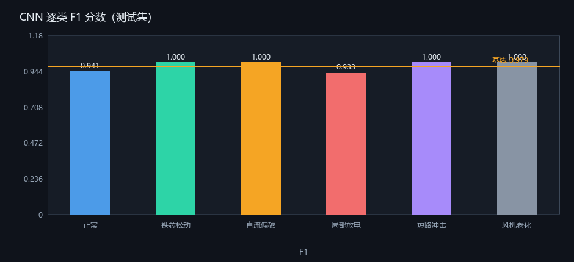

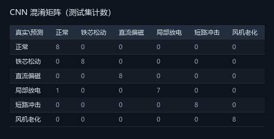
结果与逐类 F1 明细见 outputs/model_compare.csv、outputs/learning_curve.csv、outputs/confusion_table.png。
09从这里到深度学习
这一节把本次复现和综述第 5 节的模型谱系接起来。你刚手写的 CNN 是所有后续架构的底座：
| 架构 | 在 CNN 之上加了什么 | 解决综述里的哪个痛点 | 代价 |
|---|---|---|---|
| CNN | 基线：卷积 + 池化 + 全连接 | 自动学二维时频图谱特征 | 浅层、参数少、可解释性一般 |
| ResNet | 残差跳接 y = F(x) + x | 深层不再梯度退化，精度 96%+ | 参数量大、训练慢 |
| RNN / LSTM / GRU | 门控循环单元，按帧序列建模 | 动态工况、时序演化；39 维 MFCC 直接喂进去 | 难并行、长序列仍吃力 |
| Transformer / ViT | 自注意力，谱图切块 + 位置编码 | 全局依赖、突发故障；可用 Grad-CAM 解释 | 数据饥渴、计算量大 |
| 领域大模型 | 预训练 + 参数高效微调 | 100 样本小场景下 F1 大幅提升 | 部署成本、可信度 |
工程落地的三条现实约束（也是综述第 6 节的五大挑战）：
- 噪声鲁棒性：现场有列车鸣笛、鸟声等非平稳噪声，实验室 99% 到现场会掉；要做极端噪声注入与物理先验融合。
- 标准化：采样率 48 kHz / 25.6 kHz、帧长 10 s / 2 min 各不相同，准确率不能横向比较；先统一采集协议与公开基准集。
- 可解释与动态工况：注意力图 / SHAP 给出"模型凭哪段频谱判的"；负载波动、启停下的泛化目前几乎没有可靠验证。
10验证总表（脚本实测）
所有数值由 run.py 运行后写入 outputs/metrics.js，下面表格由页面直接读取填充。这是"复现"是否可信的凭据。
| 验证项 | 实测值 | 判据 / 说明 |
|---|
数据集与训练
| 项目 | 值 |
|---|
指标在 run.py 结束时直接内联进本页（离线打开也不会丢数据），同时输出 metrics.json / metrics.js 供程序读取。
11局限、文件清单与下一步
当前局限
- 数据是合成稳态信号，不含现场强电磁干扰、多设备混响、渐变型故障的长期演化。
- 8 kHz 采样是教学折中；真实工作请按 25.6/48 kHz 重新设置
wav.FS与 Mel 上限。 - EMD 用自然三次样条插值包络（没有 SciPy），端点仍会有轻微摆动；特征计算在 2 kHz 降采样上做以控制耗时。
- 分类只做了 6 类闭集，没做开集拒识、置信度校准、跨设备迁移。
换成真实 WAV
python run.py --wav "C:/path/to/transformer.wav" # 输出 outputs/real_wav/：波形图、频谱、log-Mel、MFCC、49 维特征表 # 若要训练，把 wav.build_dataset() 换成按文件名标签读取目录即可
文件清单
| 文件 | 职责 |
|---|---|
src/wav.py | x(t) 模型、6 类声纹合成、16 bit WAV 读写 |
src/dsp.py | DFT/FFT/STFT、Mel/MFCC、Gamma/Gammatone、Haar/db4 DWT、Morlet CWT、EMD + 数值验证 |
src/features.py | 49 维特征、Fisher、PCA、相关分析、CSV 表格 |
src/nn.py | BPNN / CNN（im2col + 反向传播）、梯度检查、训练与分类曲线 |
src/viz.py | 全部 DSP 教学可视化 |
src/plot.py | 零依赖深色绘图引擎（微软雅黑，中文不乱码） |
run.py | 一键编排、指标汇总、真实 WAV 模式 |
最值得继续做的三件事：① 换真实录音验证噪声鲁棒性；② 把 LSTM/Transformer 接进同一套 39 维 MFCC 序列，补上动态工况；③ 用公开基准集统一指标（Accuracy / 宏 F1 / AUC / 置信区间），让结果可比较。